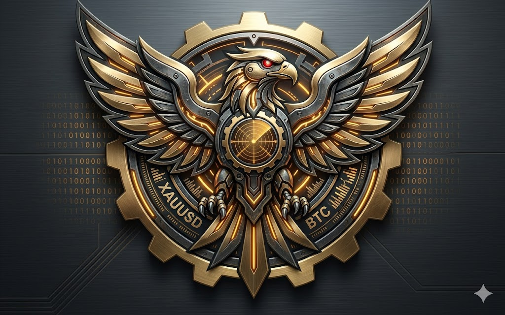
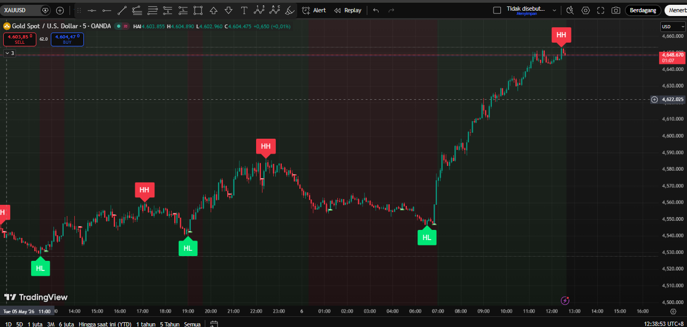
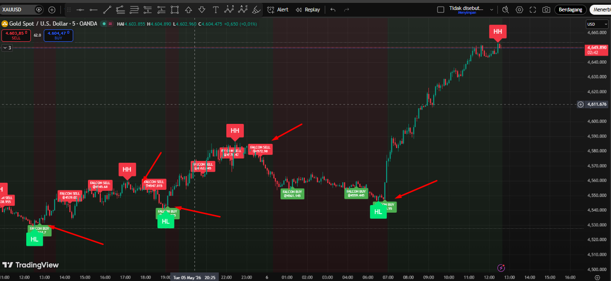

"The Ultimate Market Structure Navigator"

Market seringkali terlihat seperti benang kusut yang acak. ZigTrend v5.4 hadir untuk mengurai kerumitan tersebut dengan memetakan struktur Swing High & Low secara mekanis, menghilangkan bias emosional dalam analisis tren Anda.
Halaman ini menampilkan bagaimana algoritma ZigTrend memetakan letak ayunan *swing* (HL, HH, LL, LH) secara akurat.

"ZigTrend mengidentifikasi *puncak* dan *lembah* ayunan harga secara objektif, memberikan dasar yang kuat untuk memahami tren saat ini."
Kunci dari ZigTrend adalah konsep **Single-valid Entry** untuk setiap ayunan swing.

"Single Entry valid memberikan kedisiplinan dan mengurangi trade yang tidak perlu."
Gunakan ZigTrend v5.4 untuk navigasi yang lebih cerdas dan objektif.
DAPATKAN LISENSI (TELEGRAM)